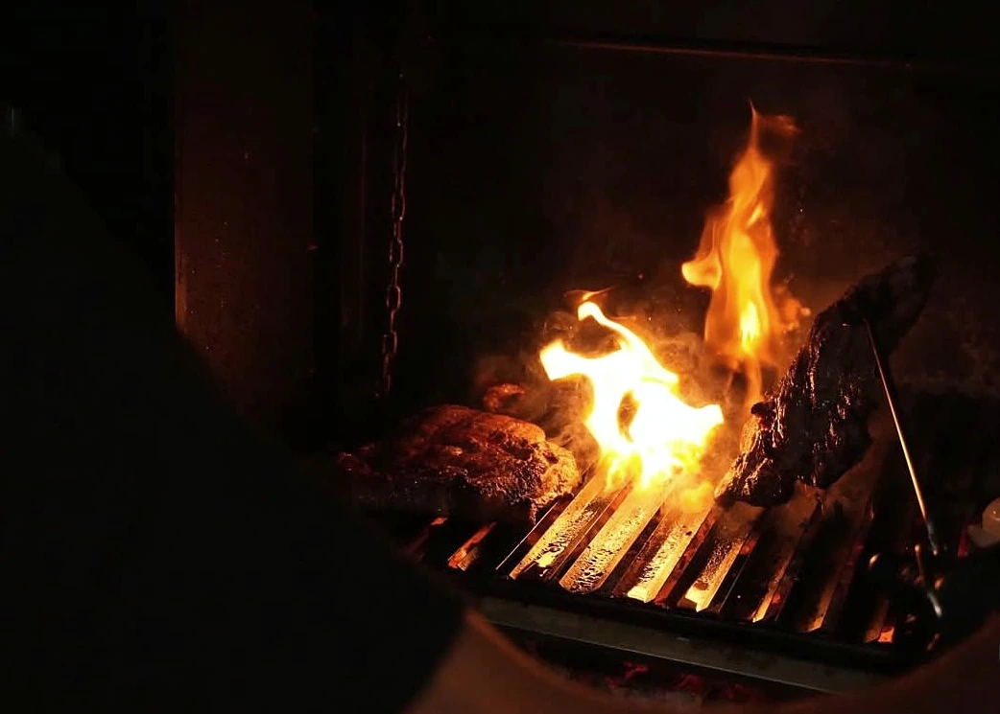

Pedimos un solomillo de ternera gallega a la brasa y estaba espectacular.Extracto de reseña de Google

02 / Nuestra esenciaAl fuego.
Al fuego.
Con alma.
En pleno corazón de Cantillana, Paseo reúne cocina urbana, el sabor de las brasas y el ambiente cercano de un bar de toda la vida. Una mesa para compartir, una buena cerveza y tiempo para disfrutar.
Ven a conocernos